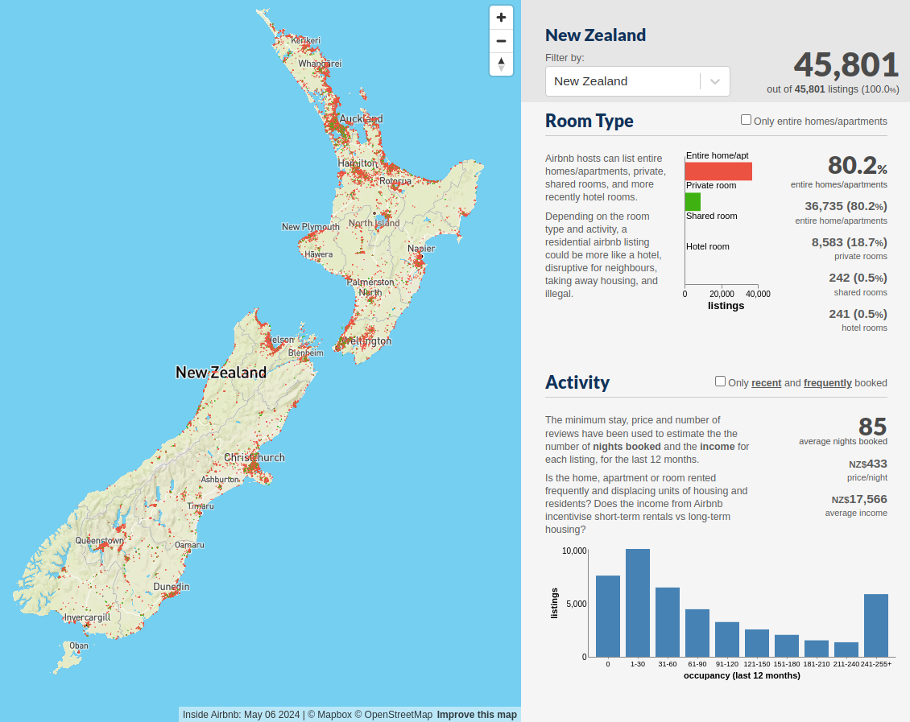

### Welcome! Get ready for the Exploratory Data Analysis workshop: <div style="font-size: 0.78em;"> 1. Open the workshop materials: **[ben-denham.github.io/python-eda](https://ben-denham.github.io/python-eda)** 2. Click the link to open **Google Colab Notebooks** 3. Click the **`New Notebook`** button 4. Type **`1+1`** into the empty prompt/cell, then **press the `Enter` key *while holding* the `Shift` key** to run it 5. After a short delay while the notebook starts, you should see the result: `2` 6. If you need help, **ask a neighbour or a helper** </div>
# Exploratory Data Analysis with Python ### Dr Ben Denham
## My Path to Data Science <div> <img src="images/about-me.png" width="90%"> </div> <aside class="notes"> * My roots lie in software engineering * I started seriously using these tools and techniques while completing a PhD in machine learning * And I now regularly explore data as a data scientist at Fisher & Paykel Appliances </aside>
### Workshop Structure <style> tr.highlight-blue { background: #62BFF5; font-weight: bold; } tr.highlight-red { background: #F56267; } tr.highlight-yellow { background: #F5F262; } </style> <table> <tr class="highlight-yellow"> <td>Introduction</td> <td>2:00 - 2:15</td> </tr> <tr class="highlight-blue"> <td>Tutorial 1: Loading and Visualising</td> <td>2:15 - 3:00</td> </tr> <tr class="highlight-red"> <td>Afternoon Tea</td> <td>3:00 - 3:20</td> </tr> <tr class="highlight-blue"> <td>Tutorial 2: Filtering and Preparing</td> <td>3:20 - 4:20</td> </tr> <tr class="highlight-yellow"> <td>Presentation: Effective Data Analysis</td> <td>4:20 - 4:40</td> </tr> <tr class="highlight-red"> <td>Short break</td> <td>4:40 - 4:45</td> </tr> <tr class="highlight-blue"> <td>Tutorial 3: Grouping and Presenting</td> <td>4:45 - 5:45</td> </tr> <tr class="highlight-yellow"> <td>Wrap-Up</td> <td>5:45 - 6:00</td> </tr> </table> <aside class="notes"> * Timings are just a guide </aside>
## Hands-On Tutorials <div style="display: flex;"> * **Follow-along coding** * **Tutorial 1:** Typing everything * **Tutorials 2 and 3:** Less typing, more complex examples * **Practice exercises** * Try it yourself, then together * Plus "extra for experts" </div> <aside class="notes"> * As we progress through tutorials, examples will get more complex, so there will be less typing </aside>
## Getting Help! <div style="display: flex;"> * <strong>If you get stuck at any point</strong> * Raise your hand! A helper will come to you. * If you finish quickly - help your neighbours. </div> <aside class="notes"> * Practice raising hands * Introduce yourself to your neighbours * Name * Beginner/Intermediate/Expert @ Python </aside>
### What is Exploratory Data Analysis? <div style="display: flex;"> * Getting to know the data * Asking questions, following leads * Testing our assumptions * Summaries, plots, relationships * Precursor to modelling (statistical inference, machine learning) </div> We're going to **learn EDA by doing it!**
## The Data: <div style="font-size: 0.95em; display: flex;"> * **New Zealand Airbnb listings from [insideairbnb.com](https://insideairbnb.com)** * [CC BY 4.0 License](http://creativecommons.org/licenses/by/4.0/) * We'll explore a sample of listings from September 2023 * **Our Goal:** Pricing an Airbnb based on its listing details  </div> <aside class="notes"> * When performing exploratory data analysis, it is very helpful to have a goal in mind * Inside Airbnb collect this data to analyse the impact of short-term Airbnb rentals on residential housing areas * Our eventual goal is to determine a reasonable price for an Airbnb listing, so we'll be interested in exploring relationships between the listing details of an Airbnb and its price. </aside>
## Why for EDA? <div style="font-size: 0.9em;"> * **Many libraries** for data analysis with a **global community** * As a **general purpose language**, Python has natural paths for developing your analysis into: * A **web application or API** * An automated **data processing pipeline** * A **machine learning model** </div>
## Our Tools for Today <div style="text-align: center;"> <img src="images/jupyter-logo.svg" style="width: 30%;"> <br> <br> </div>
## Questions?
# Effective Exploratory Data Analysis #### A Method for Productively Exploring Data
# Wrap-Up